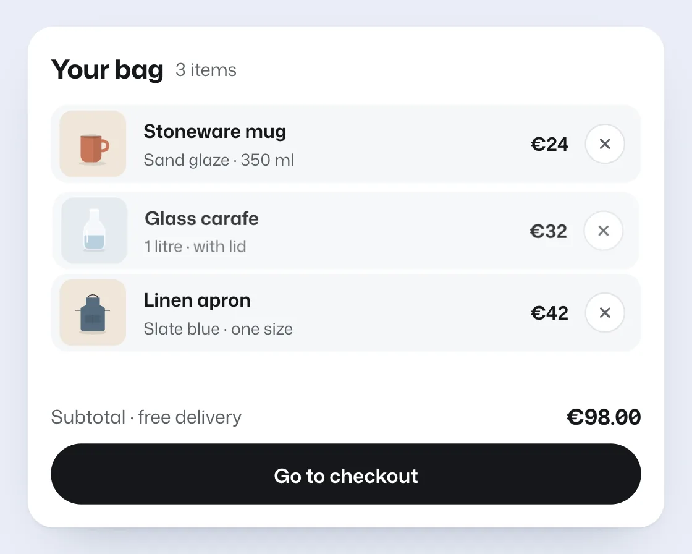

Add & remove
Add & remove is a DOM effect: the gap closes after the item leaves, and opens before it returns. One plain JavaScript file with no dependencies; add it with npx motion-library add add-remove.

Open it live, tune it and copy the code
What is Add & remove?
A removed bag item fades out, then the rows below close the gap; Undo reverses both steps.
How does Add & remove work?
Rows never animate height: they’re measured before and after and slid with a staggered transform (FLIP), and leaving then collapsing means nothing jumps.
How do I add Add & remove to my website?
- In your project folder, run
npx motion-library add add-remove. It writesanimations/add-remove.js. Needs Node 18 or newer. - Import it and call it with a container element that has a size:
import fx from './animations/add-remove.js'; const stop = fx(document.querySelector('#hero')); - Call
stop()to clean up, for example when a component unmounts.
Every setting below is also a flag, so you can install it already tuned: npx motion-library add add-remove --duration 800.
What settings can I tweak?
| Setting | Flag | Default | Range | Step |
|---|---|---|---|---|
| Slide (ms) | --duration | 300 | 150 to 800 | 10 |
| Stagger (ms) | --stagger | 30 | 0 to 120 | 5 |
Specifications
- Renderer
- DOM (CSS and the Web Animations API)
- Category
- Basics
- Dependencies
- None
- File size
- 9.5 KB, unminified
- Interactive
- No: it plays on its own
- Reduced motion
- Respects prefers-reduced-motion
- Licence
- MIT-0: use it anywhere, no credit needed
Source code
// Add & remove: take an item out of your bag and the rows below close the gap; press Undo and it slides back into the same spot.
// The leaving row fades and shrinks first, then its neighbours glide up with a small stagger (FLIP, transform only). On Undo the gap opens before the row fades back in, so nothing ever jumps.
const PARAMS = { duration: 300, stagger: 30 };
export default function (stage) {
const reduce = matchMedia('(prefers-reduced-motion: reduce)').matches;
const AW = 440, AH = 346;
const sh = w => `<ellipse cx="50" cy="84" rx="${w}" ry="3.6" fill="#000" opacity=".09"/>`;
const items = [
{ name: 'Stoneware mug', meta: 'Sand glaze · 350 ml', price: 24, bg: '#efe6da', art: `${sh(24)}<path d="M63 45h4.5a8.5 8.5 0 0 1 0 17H63" fill="none" stroke="#c9775a" stroke-width="5.5"/><path d="M29 37h36v34a11 11 0 0 1-11 11H40a11 11 0 0 1-11-11z" fill="#c9775a"/><path d="M51 37h14v34a11 11 0 0 1-11 11h-3z" fill="#000" opacity=".08"/><ellipse cx="47" cy="37" rx="18" ry="3.2" fill="#000" opacity=".18"/>` },
{ name: 'Glass carafe', meta: '1 litre · with lid', price: 32, bg: '#e1e8ef', art: `${sh(20)}<path d="M43 16h14v15c0 3 11 9 11 20v23a8 8 0 0 1-8 8H40a8 8 0 0 1-8-8V51c0-11 11-17 11-20z" fill="#fff" fill-opacity=".6" stroke="#fff" stroke-width="1.5"/><path d="M32.8 58h34.4v16a8 8 0 0 1-8 8H40.8a8 8 0 0 1-8-8z" fill="#7fa9c4" opacity=".6"/><path d="M38 49v21" stroke="#fff" stroke-width="2.5" stroke-linecap="round"/><rect x="42" y="12" width="16" height="5" rx="2.5" fill="#fff"/>` },
{ name: 'Linen apron', meta: 'Slate blue · one size', price: 42, bg: '#efe6da', art: `${sh(24)}<path d="M41 26c0-9 18-9 18 0" fill="none" stroke="#33373c" stroke-width="1.6"/><path d="M38 24h24v13l9 5v36a4 4 0 0 1-4 4H33a4 4 0 0 1-4-4V42l9-5z" fill="#556b7d"/><rect x="37" y="54" width="26" height="14" rx="2" fill="#000" opacity=".1"/><path d="M50 54v14" stroke="#000" stroke-opacity=".12"/><path d="M29 46h-9M71 46h9" stroke="#33373c" stroke-width="1.4"/>` },
];
const root = document.createElement('div');
root.className = 'ar-root';
root.innerHTML = `<style>
.ar-root { position: absolute; inset: 0; background: radial-gradient(120% 100% at 50% 0%, #1b1b1e, #0d0d0f); overflow: hidden; color: #15171a; font-family: "Mona Sans", system-ui, -apple-system, sans-serif; }
.ar-board { position: absolute; left: 50%; top: 50%; width: ${AW}px; height: ${AH}px; box-sizing: border-box; padding: 16px; background: #fff; border-radius: 18px; box-shadow: 0 1px 2px rgba(20,30,60,.06), 0 18px 40px -24px rgba(20,30,60,.35); }
.ar-head { display: flex; align-items: baseline; gap: 8px; margin-bottom: 12px; }
.ar-head h3 { margin: 0; font-size: 18px; font-weight: 700; letter-spacing: -0.02em; font-stretch: 106%; }
.ar-roll { position: relative; display: inline-block; height: 16px; min-width: 60px; overflow: hidden; vertical-align: bottom; font-size: 12.5px; color: #5b6066; font-variant-numeric: tabular-nums; }
.ar-roll span { position: absolute; left: 0; top: 0; white-space: nowrap; }
.ar-roll.r span { left: auto; right: 0; }
.ar-row { position: relative; height: 54px; margin-bottom: 6px; border-radius: 12px; background: #f6f7f9; display: grid; grid-template-columns: 46px 1fr auto 26px; align-items: center; gap: 12px; padding: 0 12px 0 6px; }
.ar-thumb { width: 46px; height: 46px; border-radius: 9px; display: grid; place-items: center; }
.ar-thumb svg { width: 40px; height: 40px; }
.ar-name { font-size: 13px; font-weight: 620; }
.ar-meta { margin-top: 2px; font-size: 11.5px; color: #5b6066; }
.ar-price { font-size: 13px; font-weight: 640; font-variant-numeric: tabular-nums; }
.ar-x { width: 26px; height: 26px; border-radius: 50%; background: #fff; display: grid; place-items: center; box-shadow: 0 0 0 1px #e1e5e9; }
.ar-foot { position: absolute; left: 16px; right: 16px; bottom: 16px; }
.ar-sub { display: flex; justify-content: space-between; align-items: center; font-size: 13px; color: #5b6066; margin-bottom: 10px; }
.ar-sub .ar-roll { font-size: 15px; font-weight: 680; color: #15171a; height: 19px; }
.ar-btn { height: 42px; border-radius: 999px; background: #15171a; color: #fff; display: grid; place-items: center; font-size: 13.5px; font-weight: 620; }
.ar-toast { position: absolute; left: 50%; bottom: 100px; height: 38px; padding: 0 6px 0 14px; margin-left: -128px; width: 256px; box-sizing: border-box; border-radius: 12px; background: #15171a; color: #fff; display: flex; align-items: center; justify-content: space-between; font-size: 12.5px; box-shadow: 0 12px 28px -10px rgba(10,14,30,.5); opacity: 0; pointer-events: none; }
.ar-toast b { font-weight: 650; padding: 6px 10px; border-radius: 8px; background: rgba(255,255,255,.12); }
</style>
<div class="ar-board">
<div class="ar-head"><h3>Your bag</h3><span class="ar-roll" data-k="count"><span></span></span></div>
<div class="ar-list"></div>
<div class="ar-foot"><div class="ar-sub"><span>Subtotal · free delivery</span><span class="ar-roll r" data-k="sum"><span></span></span></div><div class="ar-btn">Go to checkout</div></div>
<div class="ar-toast"><span></span><b>Undo</b></div>
</div>`;
stage.append(root);
const $ = s => root.querySelector(s);
const board = $('.ar-board'), list = $('.ar-list'), toast = $('.ar-toast'), countEl = $('[data-k=count]'), sumEl = $('[data-k=sum]');
const xIcon = '<svg viewBox="0 0 12 12" width="10" height="10"><path d="M2.5 2.5l7 7M9.5 2.5l-7 7" stroke="#5b6066" stroke-width="1.6" stroke-linecap="round"/></svg>';
items.forEach(it => {
it.el = document.createElement('div'); it.el.className = 'ar-row';
it.el.innerHTML = `<span class="ar-thumb" style="background:${it.bg}"><svg viewBox="0 0 100 100">${it.art}</svg></span><span><div class="ar-name">${it.name}</div><div class="ar-meta">${it.meta}</div></span><span class="ar-price">€${it.price}</span><span class="ar-x">${xIcon}</span>`;
list.append(it.el);
});
let scale = 1;
const fit = () => { const s = Math.min(stage.clientWidth / AW, stage.clientHeight / AH) * 0.92; scale = Math.min(s, 1.6); board.style.transform = `translate(-50%, -50%) scale(${scale})`; };
const ro = new ResizeObserver(fit); ro.observe(stage); fit();
const easeOut = 'cubic-bezier(0.23, 1, 0.32, 1)', inOut = 'cubic-bezier(0.77, 0, 0.175, 1)';
const roll = (box, text, animate) => {
const old = box.lastElementChild, next = document.createElement('span'); next.textContent = text; box.append(next);
if (!animate) { old.remove(); return; }
old.animate([{ transform: 'none', opacity: 1 }, { transform: reduce ? 'none' : 'translateY(-100%)', opacity: 0 }], { duration: 200, easing: easeOut, fill: 'forwards' }).onfinish = () => old.remove();
next.animate([{ transform: reduce ? 'none' : 'translateY(100%)', opacity: 0 }, { transform: 'none', opacity: 1 }], { duration: 260, easing: easeOut });
};
let inBag = [...items];
const totals = animate => {
roll(countEl, `${inBag.length} items`, animate);
roll(sumEl, `€${inBag.reduce((a, it) => a + it.price, 0)}.00`, animate);
};
totals(false);
const press = el => el.animate([{ transform: 'scale(1)' }, { transform: 'scale(0.9)' }, { transform: 'scale(1)' }], { duration: reduce ? 0 : 200, easing: easeOut });
// FLIP: remember where every row is, change the DOM, then play each row from its old spot to its new one.
function flip(change) {
const rows = [...list.children], first = new Map(rows.map(r => [r, r.getBoundingClientRect().top]));
change();
if (reduce) return; // jump straight to the new layout
let n = 0;
rows.forEach(r => {
if (!r.isConnected) return;
const dy = (first.get(r) - r.getBoundingClientRect().top) / scale;
if (Math.abs(dy) < 0.5) return;
r.animate([{ transform: `translateY(${dy}px)` }, { transform: 'none' }], { duration: PARAMS.duration, delay: n++ * PARAMS.stagger, easing: inOut, fill: 'backwards' });
});
}
const timers = new Set();
const later = (fn, ms) => { const id = setTimeout(() => { timers.delete(id); fn(); }, ms); timers.add(id); };
const order = [1, 0, 2];
let loop = 0;
function cycle() {
const i = order[loop++ % order.length], it = items[i];
later(() => press(it.el.querySelector('.ar-x')), 900);
later(() => {
it.el.animate([{ opacity: 1, transform: 'none' }, { opacity: 0, transform: reduce ? 'none' : 'scale(0.96)' }], { duration: 180, easing: easeOut, fill: 'forwards' });
}, 1020);
later(() => {
flip(() => it.el.remove());
inBag = inBag.filter(x => x !== it); totals(true);
toast.firstElementChild.textContent = `Removed ${it.name.toLowerCase()}`;
toast.animate([{ opacity: 0, transform: reduce ? 'none' : 'translateY(10px) scale(0.96)' }, { opacity: 1, transform: 'none' }], { duration: 260, delay: 120, easing: easeOut, fill: 'both' });
}, 1220);
later(() => press(toast.lastElementChild), 2900);
later(() => {
toast.animate([{ opacity: 1, transform: 'none' }, { opacity: 0, transform: reduce ? 'none' : 'translateY(6px)' }], { duration: 160, easing: easeOut, fill: 'both' });
// Undo: the gap opens first, then the row fades back into it.
flip(() => list.insertBefore(it.el, list.children[i] || null));
it.el.animate([{ opacity: 0, transform: reduce ? 'none' : 'scale(0.96)' }, { opacity: 1, transform: 'none' }], { duration: 260, delay: PARAMS.duration * 0.45, easing: easeOut, fill: 'both' });
inBag = items.filter(x => x.el.isConnected); totals(true);
}, 3020);
later(cycle, 4600);
}
cycle();
return () => { timers.forEach(clearTimeout); ro.disconnect(); root.getAnimations({ subtree: true }).forEach(a => a.cancel()); root.remove(); };
}